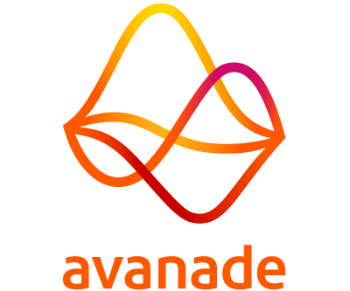
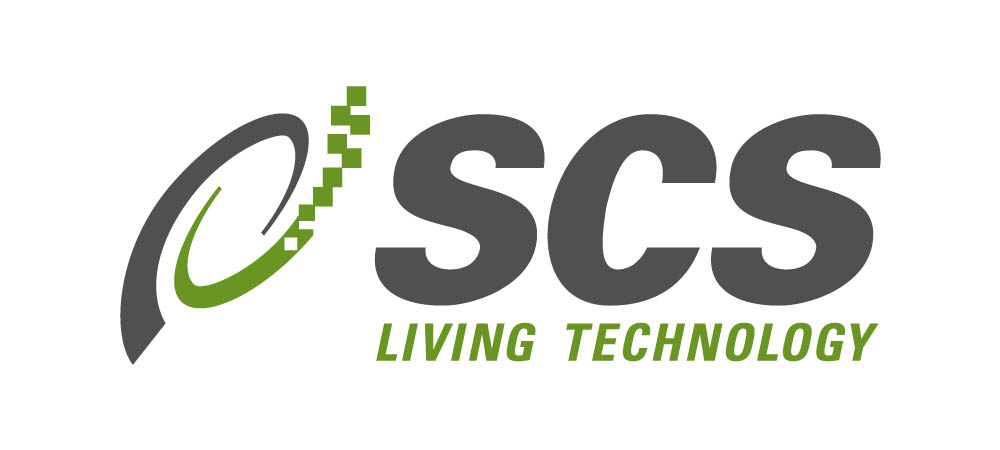
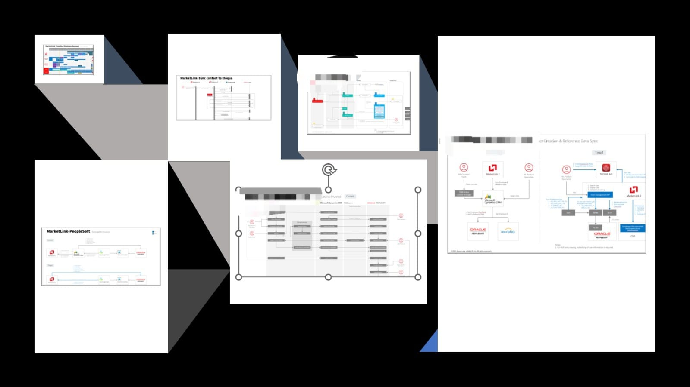
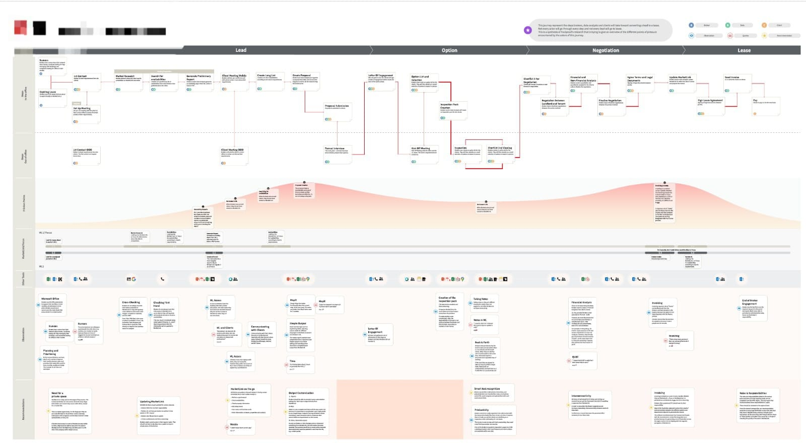
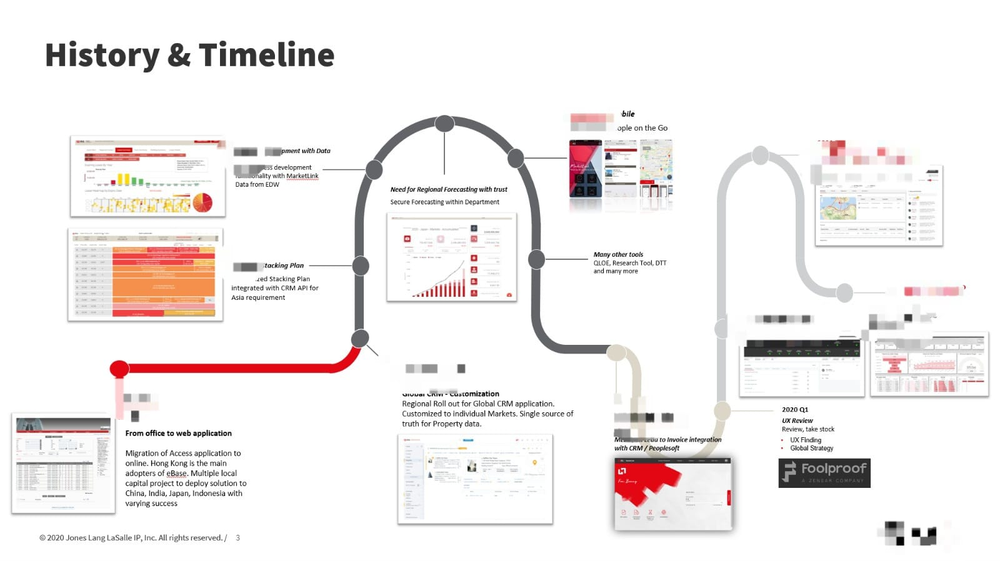

Highly skilled and driven Technology Engineering Director with over 18 years of exceptional experience. I have led regional development teams, delivering innovative software solutions. As a collaborative leader, I foster a culture of teamwork and innovation, nurturing high-performance teams.
My expertise lies in specializing in custom web development, adept at capturing business processes information and presenting valuable business insights to senior management. I take great delight in leveraging technology solutions to solve complex business problems effectively.
Throughout my career, I have donned various hats, from a seasoned consultant to a proficient business operations and technology delivery director. This diverse background has equipped me with a holistic understanding of the industry and a unique ability to bridge the gap between business needs and cutting-edge technological advancements.
Passionate, forward-thinking, and results-oriented, I am eager to bring my extensive skill set to drive your organization's success, empowering teams to reach their full potential and delivering unparalleled solutions that shape the future of your business.
Accomplished the successful deployment of CRM & Real Estate Data management solutions across the Asia Pacific region, leveraging best practices from local business process. The integrated solution not only grants businesses valuable insights, providing a competitive edge against competitors, but also facilitates increased transaction closures. Additionally, it serves as a central integration hub for other enterprise systems like PeopleSoft for finance and Eloqua for marketing. Collaborating closely with the product/program team, I continuously deliver cutting-edge software solutions within the Ecosystem. As the application owner, I ensure strict alignment with Enterprise standards for infrastructure and technology stack.
Successfully deployed an innovative forecasting and workflow system in the Asia Pacific region, ensuring a consistent approach to opportunity management and analytics across different theatres. This system not only establishes the gold standard for best practices in Asia Pacific but also serves as the live solution for future migration into SFDC for global consolidation. Actively engaged in strategy discussions and development with corporate, I play a pivotal role as the execution engine for deployment in APJ.
Moreover, I am instrumental in creating and providing analytic, statistical models, and MIS support to cross-functional business leaders, including CFO, SVP, and Directors. My contributions enhance decision-making processes and facilitate data-driven insights for key stakeholders.

2006 - 2009As a Resident Consultant at Global Investment Corporation of Singapore, I have successfully designed and implemented multiple mission-critical systems used for investment analysis. These systems encompass a comprehensive range, including data warehousing, reporting models, ETL solutions, and transaction workflow systems. Over the course of 3.5 years, I have assumed various pivotal roles, transitioning from a developer to a team lead, and eventually serving as a solution architect. One of my most significant achievements was leading a high-impact project worth over a million dollars, managing a dynamic team of more than 10 members to ensure its successful delivery.

2006 - 2009This is my first professional role within an established enterprise corporation, I immersed myself in software development for workflow applications tailored to commercial sectors. Notably, the pilot application was transformed into a market-ready product, successfully selling it to other commercial banks. As a pioneering development team member, I assumed the role of team lead, overseeing the customization and seamless rollout of subsequent projects. Beyond core project delivery, I actively participated in other enterprise initiatives, including operationalizing offshore development models and enhancing application support frameworks. Additionally, I played a key role in recruiting top talent for the offshore and support teams.
Bachelor of Computing, Deakin University
Embarked on a transformative journey to rewire the backend platform, aiming to curtail license costs associated with third-party vendor maintenance. This legacy integration platform has sustained operations for over 15 years, interfacing with various packaged solutions. Given the limited knowledge of original requirements and existing implementation, my role as engineering lead involved orchestrating a team of engineers to reverse-engineer code, conduct rigorous testing, and meticulously devise the design for the "to be" solution. A comprehensive transition plan was meticulously crafted to ensure minimal business disruption.
The resultant impact of this initiative transcends mere cost savings, amounting to a substantial $1.7 million in maintenance expense reduction. Moreover, the application's liberation from legacy dependencies has propelled its scalability, unlocking newfound potential.

Collaborated with a design and research firm to facilitate a comprehensive discovery workshop, delving into the utilization of our current application by internal users across Asia pacific. Analyzing the workshop findings, I meticulously pinpointed areas primed for enhancement within the existing application. This strategic effort is geared towards perpetuating heightened adoption rates and maximizing the application's contribution to overall business success.
I assumed a pivotal role as the principal liaison for research, enabling them to gain insight into the conceptualization behind the application's current feature set. I am also responsible in identifying suitable workshop participants and themes, while also fulfilling the crucial responsibility of chief architect in collaborative problem-solving sessions, aimed at addressing targeted challenge.

As the Technology Manager for a core business division, I spearheaded a collaborative effort with Global Technology to implement a unified CRM system throughout the Asia Pacific region. This initiative involved replacing disparate applications and spreadsheets that were previously used for data management. In conjunction with Data Engineer team, we meticulously devised customer and real estate schemas, effectively centralizing business insights and ensuring standardization across the entire region.
The evolution of this journey unfolded as our primary dataset expanded and gained utility. Through the partnership of the regional application team under my guidance, several other business processes were seamlessly transitioned into the digital realm. This ecosystem has profoundly empowered our business users by furnishing them with real-time business insights, thus enhancing their ability to cater to clients efficiently and effectively.
